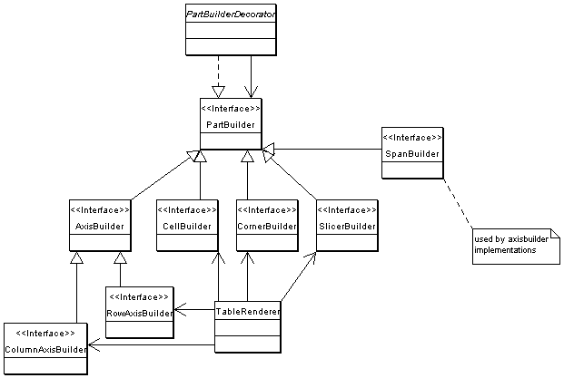
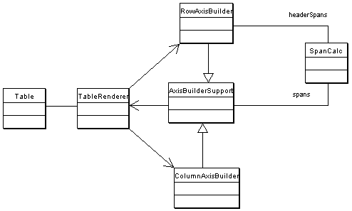

|
|||||||||
| PREV PACKAGE NEXT PACKAGE | FRAMES NO FRAMES | ||||||||
See:
Description
| Interface Summary | |
|---|---|
| AxisBuilder | builds the row or column headings |
| AxisConfig | exposes properties to configure an axis. |
| AxisHeaderBuilder | |
| CellBuilder | Created on 18.10.2002 |
| ClickableMember | creates a hyperlink or popup menu on members in the table. |
| ColumnAxisBuilder | |
| ColumnAxisConfig | |
| CornerBuilder | Created on 18.10.2002 |
| PartBuilder | Builds a part of the table |
| RowAxisBuilder | Created on 24.10.2002 |
| RowAxisConfig | |
| SlicerBuilder | Created on 18.10.2002 |
| SpanBuilder | creates an element in a table axis. |
| SpanBuilder.SBContext | |
| TableComponentExtension | Extends a TableComponent. |
| Class Summary | |
|---|---|
| AxisBuilderSupport | Created on 24.10.2002 |
| AxisHeaderBuilderSupport | |
| CellBuilderDecorator | Created on 18.10.2002 |
| CellBuilderImpl | Created on 18.10.2002 |
| ColumnAxisBuilderImpl | |
| CornerBuilderDecorator | Created on 18.10.2002 |
| CornerBuilderImpl | renders the upper left corner |
| LevelAxisDecorator | Decorates an Axis by adding the parents of all members. |
| PartBuilderDecorator | forwards lifecycle events to decoree |
| PartBuilderSupport | Created on 18.10.2002 |
| RowAxisBuilderImpl | common functionality for row axis builders |
| SlicerBuilderDecorator | Created on 18.10.2002 |
| SlicerBuilderImpl | creates a DOM Element from slicer member |
| SpanBuilderDecorator | Created on 18.10.2002 |
| SpanBuilderImpl | renders a row or column heading. |
| TableComponent | Contains a reference to the olap data plus additional gui settings. |
| TableComponentExtensionSupport | Created on 09.01.2003 |
| TableComponentFactory | creates a tablecomponent from xml configuration file |
| TableComponentTag | creates a TableComponentImpl |
Renders an OLAP Table.
The TableComponent is extended thru TableComponentExtensions. The plain table component w/o extensions paints the table w/o any navigations. The extensions add UI elements like expand / collapse buttons and RequestListeners to respond on user actions.
An extension is initialized once when the compnent is created. During initialization it may register decorators with the renderer and/or RequestListeners with the table component. The extensions are listed in confix.xml


TableComponentExtension by
deriving from TableComponentExtensionSupport. In its initialize() method you
add a decorator to the tables CellBuilder. The decorator will extend CellBuilderDecorator.
Finally you register the extension in jpivot/table/config.xml
Example Extension:
public class MyTableExtension extends TableComponentExtensionSupport {
public static final String ID = "myextension";
public String getId() {
return ID;
}
public void initialize(RequestContext context, TableComponent table) throws Exception {
super.initialize(context, table);
MyCellBuilderDecorator cbd = new MyCellBuilderDecorator(table.getCellBuilder());
table.setCellBuilder(cbd);
}
...
}
The ID is used to access the extension from JSP pages via JSTL Expression Language.
Example of a CellBuilderDecorator:
public class MyCellBuilderDecorator extends CellBuilderDecorator {
public MyCellBuilderDecorator(CellBuilder delegate) {
super(delegate);
}
public Element build(Cell cell, boolean even) {
Element el = super.build(cell, even);
// add your attributes or children here
return el;
}
public void startBuild(RequestContext context) {
super.startBuild(context);
// initialisation stuff goes here
}
public void stopBuild() {
// clean up stuff goes here
super.stopBuild();
}
}
Example registering the extension with the table component in config.xml:
<table class="com.tonbeller.jpivot.table.TableComponent"> <cellBuilder class="com.tonbeller.jpivot.table.CellBuilderImpl"/> ... <extension class="my.package.MyTableExtension"/> </table>
|
|||||||||
| PREV PACKAGE NEXT PACKAGE | FRAMES NO FRAMES | ||||||||